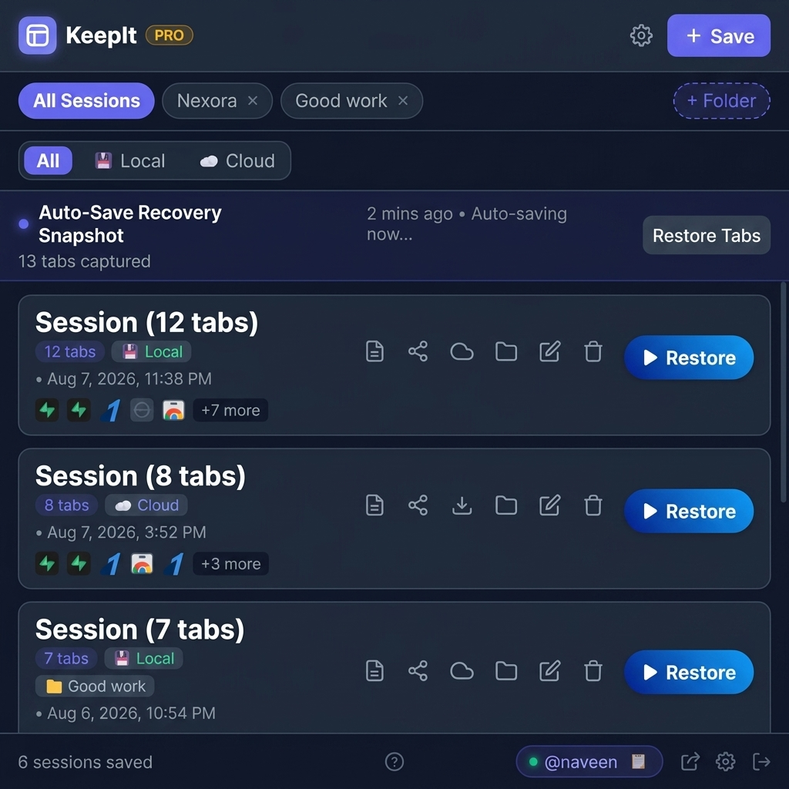
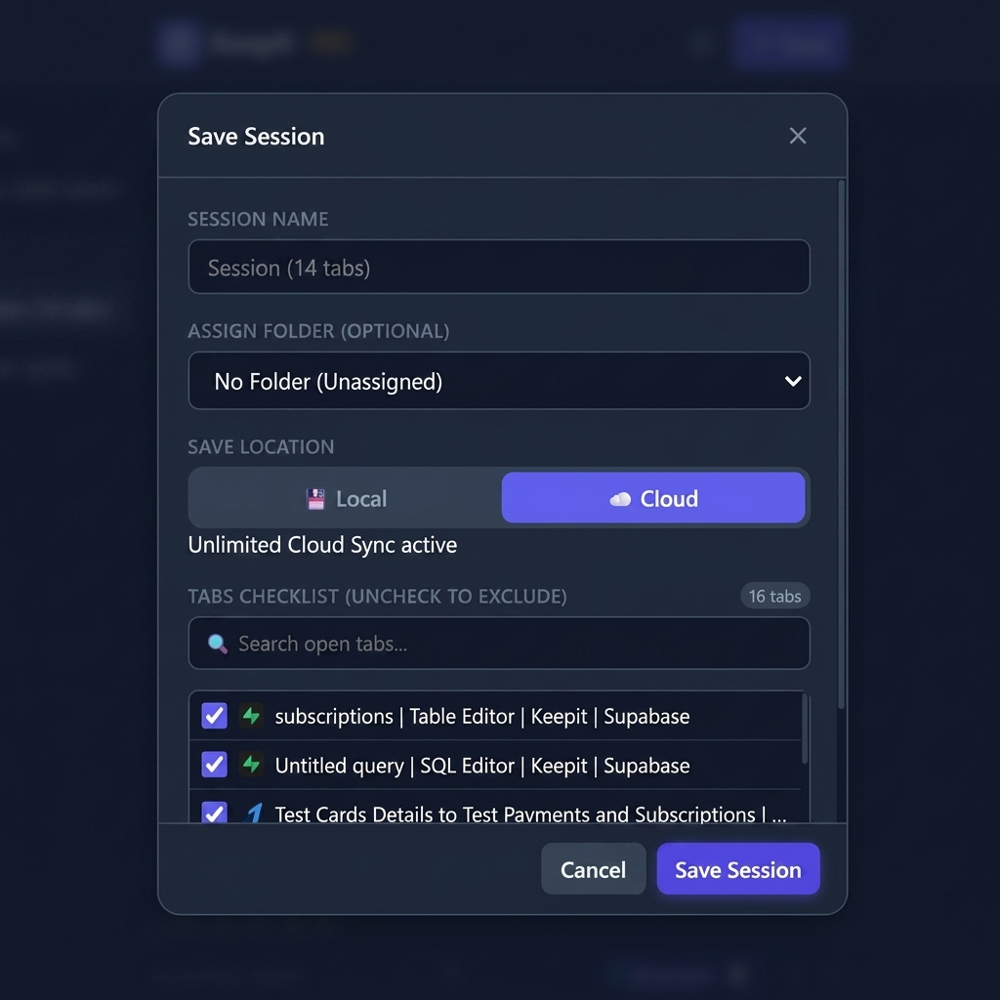
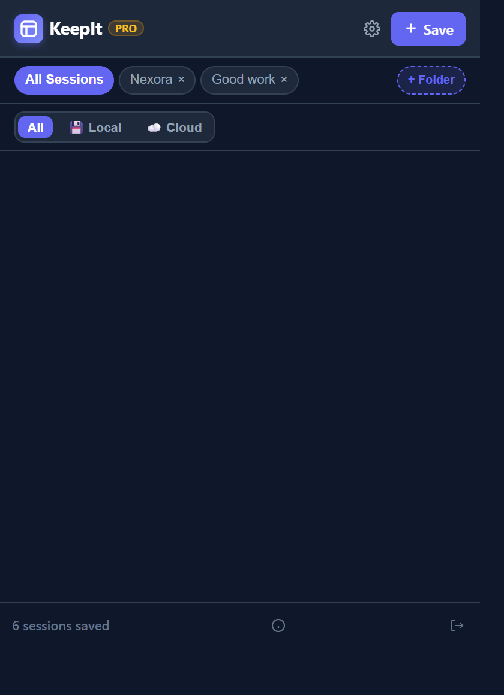
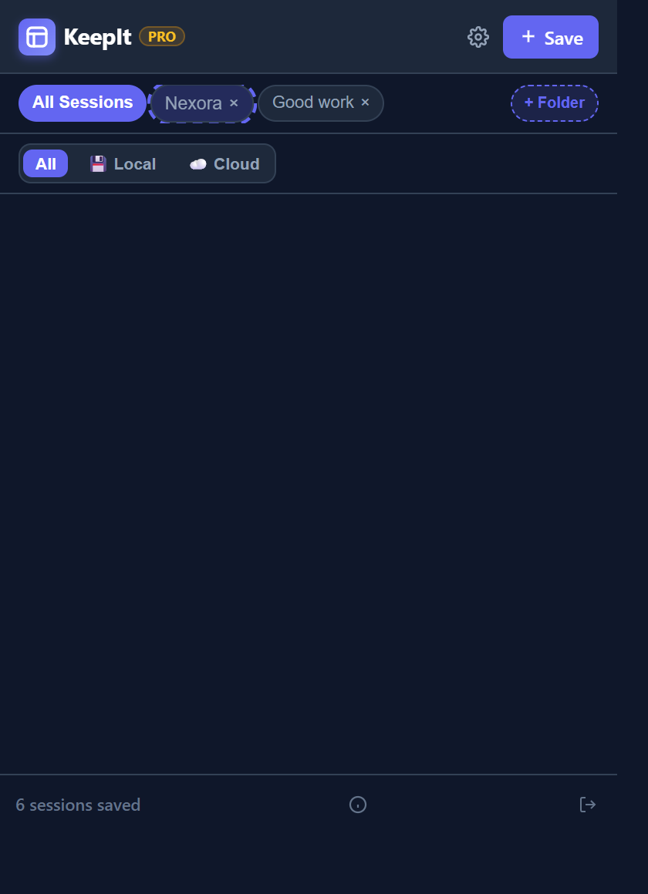
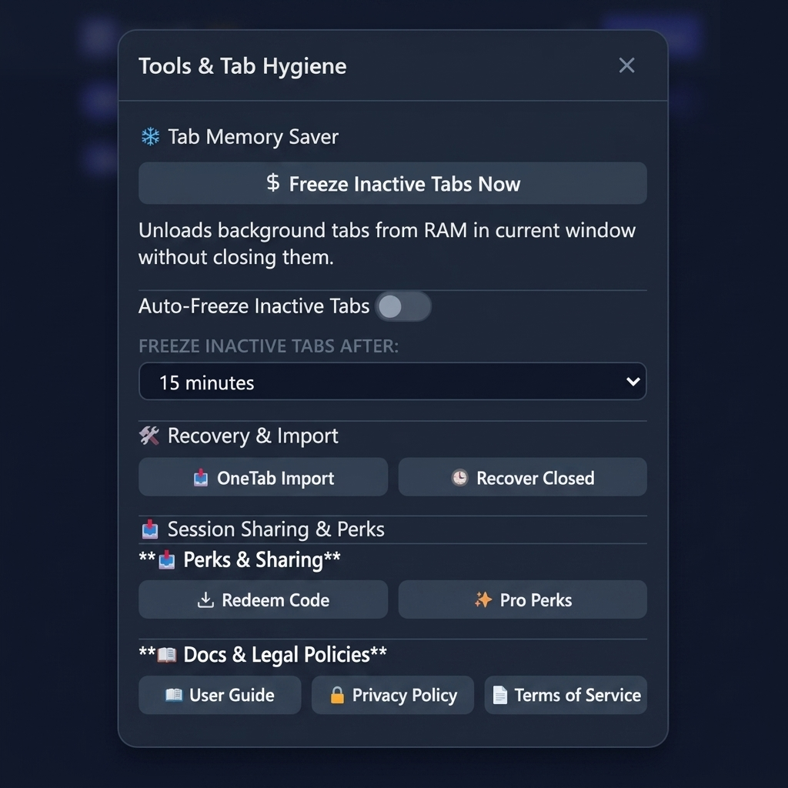
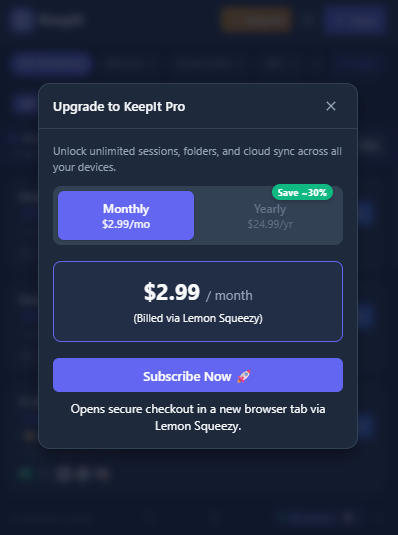

KeepIt Help & User Guide
Step-by-step help for saving your tabs, switching between projects and keeping Chrome fast. No technical knowledge needed.
No Matching Help Found
Try words like "save", "space", "shortcut", "sync" or "refund", or email us at contact.naveen.work@gmail.com.
🚀 What is KeepIt?
KeepIt helps you keep control of your browser tabs. It has two main ideas, plus a few helpers that keep Chrome quick.
- Spaces are for work you are doing now. Make one space per project (for example "Client A" or "Biology exam") and switch between them in one click.
- Sessions are saved copies of a set of tabs. Save a window today and open it again next month, even if Chrome crashed in between.
- Helpers: auto-save in the background, sleeping tabs that free memory, notes, sharing and optional sync between computers.
What do you want to do?
- Keep my tabs safe before I close a window: Save a session
- Work on several projects without a mess: Spaces and the quick switcher
- Get my tabs back after a crash or a mistake: Auto-save and recovery
- Make Chrome faster with many tabs open: Sleeping tabs
- Use my tabs on another computer: Sign in and sync
- Share tabs with someone: Send a session or share a link
- Something is not working: Fixes for common problems
- See what is free and what is Pro: Free vs Pro
Words used in KeepIt
| Word | What it means |
|---|---|
| Space | A named set of tabs for one project. You switch between spaces. |
| Session | A saved copy of a set of tabs that you can open again later. |
| Folder | A label for grouping sessions, such as "School" or "Work". |
| Auto-save | KeepIt quietly saves your open window every few minutes so a crash does not cost you your tabs. |
| Hidden Tabs window | One small minimized window where KeepIt keeps the tabs of the spaces you are not using. |
| Sleeping tab | A tab Chrome has unloaded to free memory. It stays in your tab bar and loads again when you click it. |
| Share link / Live link | A web address that lets someone see a list of tabs. A live link updates as you change the list. |

📥 Get Started in 3 Minutes
- Install KeepIt. Open the KeepIt page in the Chrome Web Store, click Add to Chrome, then Add extension.
- Keep it in reach. Click the puzzle-piece icon at the top right of Chrome and click the pin next to KeepIt. Its icon now stays in your toolbar.
- Save your first session. Click the KeepIt icon, then + Save, then confirm. Your tabs are now safe.
- Make your first space. In the KeepIt popup, create a space, give it a short name and add the tabs for one project. Next time, switch to it from the popup or with Alt + Shift + K.
💾 Save Your Tabs as a Session
A session is a saved copy of your tabs. Save one whenever you want to close a window but keep the work.
How to save
- Click the KeepIt icon, then + Save.
- Name it. KeepIt suggests a name with the date and time. Type your own if you like, such as "Taxes research".
- Pick a folder (optional). You can do this later.
- Choose tabs. All your tabs are ticked. Untick the ones you do not need. There is a search box if you have many.
- Choose where to keep it: on this computer (default) or in your KeepIt account so you can reach it on other computers.
- Click Save. You can now close the window safely.

Open a saved session again
Find it in the list and click Restore Session. KeepIt reopens the tabs. Big sessions open gently so Chrome does not freeze: tabs you are not looking at wait and load when you click them.
Your tab groups are kept
If your tabs are in Chrome tab groups, KeepIt remembers each group's name, color and whether it was collapsed, and puts the groups back when you restore.

⚡ Save in one keystroke
Press Alt + Shift + S (on Mac Cmd + Shift + S) in any window. KeepIt saves that window straight away, and its toolbar icon shows a small green tick to confirm. You can change this key at chrome://extensions/shortcuts.
📥 Moving from OneTab
In OneTab, export your tabs as text. In KeepIt open Tools & Settings (the ⚙️ icon), choose OneTab Import and paste the text. KeepIt turns it into a session.
🗂️ Spaces: One Place for Each Project
A space is a named set of tabs for one project, client or topic. You keep a single Chrome window. When you switch to another space, KeepIt saves the space you leave, opens the one you picked, and puts the old tabs in one small minimized window called Hidden Tabs. Nothing is closed.
Create and use spaces
- In the KeepIt popup, open Your spaces and create a space with a short name.
- Open the tabs you need for that project. KeepIt remembers them, including pinned tabs and tab groups.
- To work on something else, switch to another space. Use the popup, the quick switcher (below), or the right-click menu Move tab to space to send a tab to the right place.
- Come back any time. If the tabs are still waiting in Hidden Tabs they appear instantly, exactly as you left them.
Good to know
- Large spaces open gently. The first time a space opens, only the tab you were last using loads. The others open asleep, a few at a time, and load when you look at them.
- Add a tab to a space. The ＋ button next to your spaces adds a copy of the page you are on to any space or saved session. Nothing is moved or closed.
- Find a tab. You can search for a tab across all your spaces.
- Go back. Return to the space you just left. This command has no default key; set one at
chrome://extensions/shortcutsif you want it. - Sleep idle spaces. Under More options you can choose how long the tabs in your other spaces sit idle before they go to sleep (the default is 15 minutes). Pinned tabs, tabs playing audio and tabs you mark "keep awake" never sleep.
- Use them on other computers (optional). Sign in and turn on Use your spaces on all your devices. The Free plan includes up to 10 spaces.
- Spaces share your Chrome profile. That means the same logins and extensions. If you need two separate accounts on one site, use separate Chrome profiles.
What happens to the tabs you leave
Under Your spaces, More options you can choose. The recommended choice is that your open tabs move to the minimized Hidden Tabs window and stay loaded. The other choice does the same and also puts the idle ones to sleep. Older choices (close the old window, minimize it, or keep it open) are still there, and a choice you made earlier is kept.
⌨️ Quick switcher and shortcuts
- Press Alt + Shift + K (Mac: Cmd + Shift + K) to open a small box in the middle of the page. Type part of a space name and press Enter.
- Inside the box: it starts on the space you used before this one. Press the shortcut again, Tab or the arrow keys to move down the list, Alt + 1 to Alt + 9 to jump straight to an item, and Esc to close it.
- Press Alt + Shift + . for the next space and Alt + Shift + , for the previous one.
- In Chrome's address bar, type
kt, press Space, then part of a space name. - On pages where Chrome does not allow extensions to show a box (such as the New Tab page, chrome:// pages and the Web Store), KeepIt opens the switcher in a small window instead.
- To change any key, go to
chrome://extensions/shortcuts.
📁 Folders
Folders keep your saved sessions tidy. Group them by project, client, course or topic. Folders are unlimited on both Free and Pro, but a few well-named ones work best (three to five is plenty).
- Your folders appear as small tabs at the top of the KeepIt list. Click one to see only its sessions.
- Drag and drop: hold a session card, drag it onto a folder at the top and let go. It moves into that folder.

⚡ Auto-Save and Getting Tabs Back
KeepIt saves your window in the background so a crash, an update or an accidental close does not cost you your tabs.
- Auto-save: every 3 minutes on Free, every minute on Pro. The latest copy sits at the top of your list with a Restore Tabs button.
- Closed a window by mistake? Open Tools & Settings (⚙️), then Recover Closed, to see recently closed windows and tabs and bring them back.
- Earlier versions: KeepIt keeps earlier versions of your spaces and sessions for 30 days on Free and 90 days on Pro. Restoring an earlier version of a space that is open only reopens the tabs that are missing.
- Bring back a closed tab from a space: recently closed tabs of a space are kept for 30 days (up to 50 per space).
📝 Notes
Add a short note to any tab (up to 500 characters) or to a whole session (up to 2,000), for example "check the numbers on page 3". Notes are free, are saved with the session, and show up when you search. If you share a session, notes are included only if you tick Include my notes.
❄️ Keep Chrome Fast with Sleeping Tabs
Every open tab uses memory. With dozens of tabs, Chrome can slow down. KeepIt can put tabs you are not using to sleep. A sleeping tab stays in your tab bar with its title and icon, but Chrome unloads the page to free memory. When you click it, it loads again.
Put tabs to sleep now
Open Tools in KeepIt and choose Freeze Inactive Tabs Now. Background tabs in the current window go to sleep.

Do it automatically
In Settings, turn on Auto-Freeze and choose 15, 30 or 60 minutes. Tabs you have not used for that long go to sleep by themselves.
Spaces have their own sleep setting for the tabs in your other spaces. See Spaces.
☁️ Sign In and Use Tabs on More Than One Computer
Signing in is optional. When you do, you can use your saved tabs on other computers, send and receive sessions, and manage Pro. KeepIt uses Google sign-in and never sees your Google password.
- Free: up to 10 sessions saved in your account (unlimited on Pro), plus the ability to receive sessions from others.
- Works anywhere Chrome does: Windows, Mac, Linux and ChromeOS.
- Offline is fine: everything is also kept on your computer, so KeepIt keeps working without a connection. Syncing resumes when you are back online.
Set up a second computer
- Install KeepIt on both computers and sign in with the same Google account on each.
- For sessions: choose Cloud when you save.
- For spaces: turn on Use your spaces on all your devices.
- Open KeepIt on the other computer. Your sessions and spaces are there.
What is synced: names, tab titles and addresses, notes and colors. What is not: page contents, your logins on websites, scroll position or half-filled forms. If you changed the same space on both computers, KeepIt keeps the tabs from both.
📤 Send Sessions to Other People
Share a set of tabs with a teammate, classmate or friend without pasting a long list of links.
- Send a session: on a session saved in your account, click Share, type the other person's KeepIt username in Send to a KeepIt user (for example
@sarah_dev) and click Send. Sending is a Pro feature. - Prefer a link? See share links and live links below. Anyone with the link can look, even without KeepIt.
🔗 Share Links and Live Links
- Share link: the tabs you choose are packed inside the link itself. Anyone with the link can preview the list and add it to KeepIt.
- Live link: a web page that shows the tabs you choose and updates when you change them. Free: 1 active link with up to 25 tabs. Pro: unlimited links, up to 500 tabs, automatic updates and expiry dates.
- Private by default: only the tabs you tick are included. Tabs for email, banking, login pages and addresses containing words like token, key or password start unticked. A "clean address" option removes secret parts of web addresses before sending. Notes are sent only if you tick them.
- Stop sharing any time: revoking a link is always free and it stops working straight away.
👑 Free vs Pro
KeepIt is free to use. Pro costs $2.99 per month or $24.99 per year and removes limits.
| Feature | KeepIt Free ($0) | KeepIt Premium ($2.99/mo or $24.99/yr) |
|---|---|---|
| Local Sessions | Unlimited | Unlimited |
| Folder Organization | Unlimited | Unlimited |
| Cloud Sync | 10 Cloud Sessions | Unlimited Cloud Sessions |
| Background Auto-Save | Every 3 minutes | Every 1 minute |
| Tab Groups & Checklist | Full Support | Full Support |
| Session Sharing | Receive Only | Send + Receive |
| Spaces | Up to 10 | Unlimited |
| Version History | 30 days | 90 days |
| Live Links | 1 list, 25 tabs | Unlimited, 500 tabs |
Manage or cancel Pro
- In KeepIt click the ⚙️ icon (or the PRO badge) and choose Manage Subscription.
- You can see your plan, whether it bills monthly or yearly, and the next renewal date.
- To stop renewing, click Cancel Subscription. You keep Pro until the end of the period you already paid for.
Refunds are available within 7 calendar days of your purchase. See the Terms or email us. Payments are handled by Lemon Squeezy.

🛟 Fixes for Common Problems
The shortcut does nothing
Another extension may use the same keys. Go to chrome://extensions/shortcuts, find KeepIt and set different keys.
The switcher box does not appear on this page
Chrome does not let extensions show a box on some pages (the New Tab page, chrome:// pages and the Web Store). KeepIt opens a small switcher window instead. On normal websites the box appears.
My tabs seem to be missing after I switched spaces
They are probably in the minimized Hidden Tabs window. Look for it in your taskbar or dock, or just switch back to that space. If something is truly gone, try Tools & Settings, Recover Closed or an earlier version of the space.
A tab reloads when I click it
That tab was asleep to save memory. This is normal. Pin a tab, or mark it "keep awake", if you never want it to sleep.
A saved PDF or local file will not open
Chrome needs permission to open files from your computer. Go to chrome://extensions, open KeepIt's Details and switch on Allow access to file URLs. KeepIt reminds you once a day if you have saved local files and this is off.
I cannot see my spaces or sessions on my other computer
Check that both computers are signed in with the same Google account, and that Use your spaces on all your devices is on (for spaces) or that you chose Cloud when saving (for sessions). On the Free plan the first 10 spaces show; extra ones stay safe in your account until you upgrade.
"Saving to your account isn't available yet"
Account saving is temporarily unavailable. Your tabs are still saved on your computer. Try again later, and email us if it continues.
Sign-in does not work
Try again after closing the sign-in window, make sure pop-ups are not blocked for the sign-in, and check that you are online. If it still fails, email us with what you see.
I removed KeepIt. Are my tabs gone?
Sessions and spaces saved only on your computer are removed with the extension. Anything you saved to your account stays there and returns when you reinstall and sign in.
🔒 Your Privacy in Plain Words
- KeepIt does not read your pages. It only uses each tab's title, web address and icon so it can save and reopen it.
- Your tabs stay on your computer unless you sign in and choose to sync or share them.
- No ads and no tracking. KeepIt does not sell your data or show advertising.
- Your account data is protected. Only you, and people you choose to share with, can see what you save to your account.
- Payments are handled by Lemon Squeezy. KeepIt never sees or stores your card details.
- You are in control. Delete any session or space, turn sync off, revoke a link, or email us to delete your whole account.